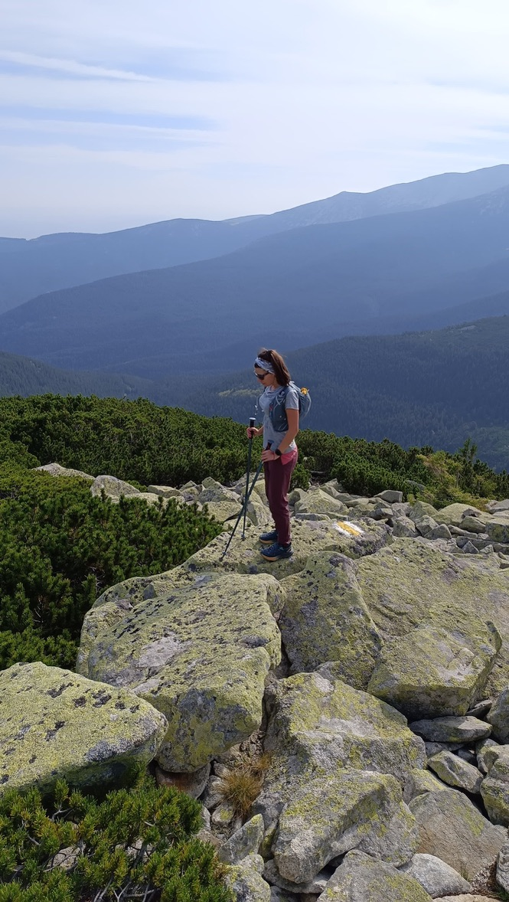
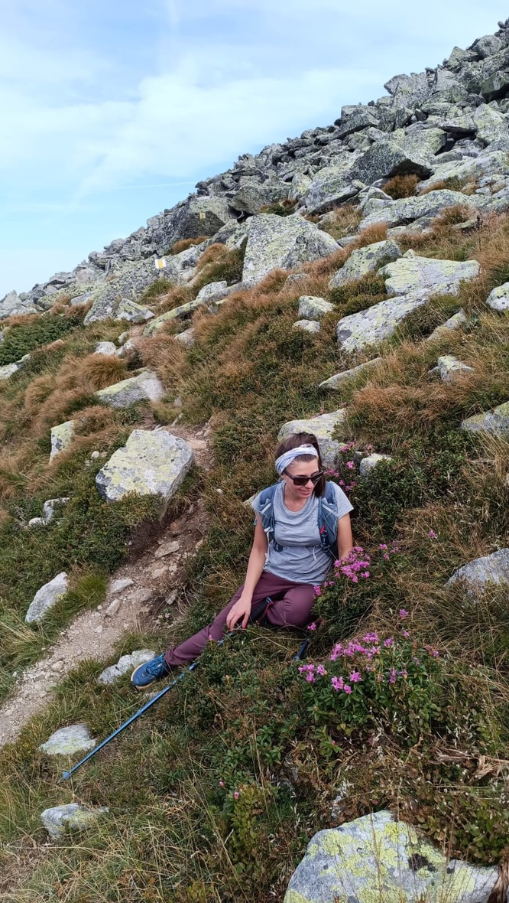
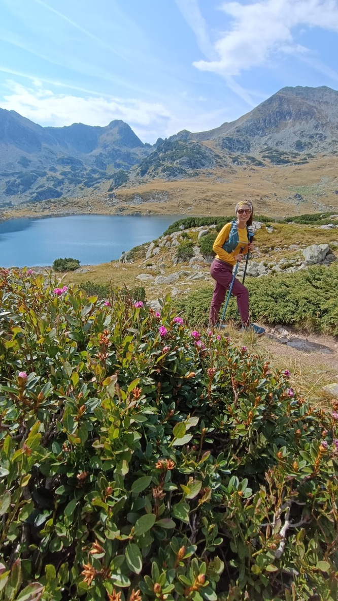

The idea is simple enough that it sounds like something a reasonable person would not do: on or around your birthday, you cover as many kilometres as you are years old. Run them, hike them, bike them — the movement is yours to choose. The number is not.
I turned 30. I chose the Retezat.
For anyone unfamiliar: the Retezat is a national park in the Southern Carpathians of Romania, and it is the kind of place that makes you recalibrate your relationship with the word "challenging." Glacial lakes at altitude, boulder fields that go on longer than seems reasonable, ridges where the trail marking disappears and you navigate by instinct and small painted rocks. It is not a beginner mountain. I did not go as a beginner. I went with 30km to cover and the kind of optimism that only arrives before you actually start.
The ridge
The first hours are always the honest ones. Before the body has warmed up, before the rhythm sets in, before the mountain stops being a concept and becomes a physical fact — that is when you find out if your preparation was real or imagined.

Somewhere above 2000 metres. The body is warm, the ridges go on forever, and the 30km feels like an abstract idea from here.
Standing on the rocks at altitude, looking out at the ridges stacked behind each other in every shade of blue, I had the specific thought I always have on mountains: this is worth every early alarm and every hard kilometre that came before this view. The Retezat from the ridge looks like a painting of itself. Too much green below, too much sky above, the trail threading through lichen-covered boulders as if someone placed them there deliberately.
The dwarf mountain pine — jneapăn, in Romanian — grows in dense low mats between the rocks, and scrambling through it is part of every Retezat day. It catches your poles, grabs your ankles, redirects you constantly. It is not possible to move fast through it. The mountain teaches you your pace whether you want to learn it or not.
The stop that wasn't optional
At some point in the middle section of a long mountain day, your body starts negotiating with you. Not stopping — negotiating. It will keep going, it says, but something needs to happen first. Sit down. Eat something. Look at the flowers.

The rhododendron made me stop. The legs agreed it was a good idea. Sometimes the mountain picks your rest spots for you.
The rhododendron in the Retezat blooms in summer in small fierce clusters, pink against the grey rock, low to the ground, completely unbothered by the altitude or the boulder fields surrounding it. I sat down next to a patch of it — officially to rest, unofficially because it seemed incorrect to walk past without acknowledging it.
Fifteen minutes on a slope, eating a bar, watching the clouds move over the ridge above. The legs stop complaining. The head goes quiet. This is the part of long mountain days that nobody photographs and everyone needs — the middle pause, when you are too far in to go back and too far out to see the end, and the only thing to do is be exactly where you are.
The lake
The Retezat has over eighty glacial lakes. Eighty. I have not counted personally but I believe it because I kept finding them — you come around a boulder or drop into a valley and there is another one, perfectly still, reflecting the peaks around it with the kind of accuracy that makes you stop and look twice.

The lake that made the whole day worth it. The rhododendron was a bonus. The smile was involuntary.
This one I found in the early afternoon, and the combination — lake, flowers, peaks, light — was enough to produce an involuntary smile, which is the best kind. You don't decide to feel like that. It just happens when the place is operating at full capacity and your defences are down from a day of hard movement.
I ate lunch at the edge of the water. I thought about how few places there are left in Europe that look like this and how lucky it is that Romania has kept this one. I did not check my phone. I sat for longer than I should have given the remaining kilometres, and I do not regret it.
The boulder field
Seek discomfort. It is a motto I picked up somewhere and kept because it turned out to be true in practice, not just in theory. Discomfort is where the interesting things happen. The boulder field at the end of a 30km mountain day is not comfortable. It is, however, interesting.

Seek discomfort. Always my motto. This is what it looks like in practice — arms up, legs done, completely worth it.
A scree field — loose boulders stacked and scattered over a steep slope — requires a specific kind of attention. Every step is a small decision. Your weight has to be right, your poles have to be placed correctly, your eyes have to be three steps ahead of your feet. When you are tired, this is exactly the kind of concentration that saves you from a twisted ankle, and the discipline of maintaining it when your body wants to coast is one of the more useful things the mountains have taught me.
I made it across. Arms up, as you do. Not because anyone was watching — there was nobody watching — but because some moments need a physical response and arms raised at the top of a boulder field after 28km is the correct one.
What 30 kilometres in the Retezat actually costs
Your legs, for approximately two days. One blister on the right heel that you ignored for too long. One gel you dropped somewhere on the ridge and couldn't find. The feeling, persistent for the last four kilometres, that you have made a mistake.
And on the other side of all of that: a number that matches your age, sitting in your GPS data permanently. The knowledge that your body, on the day it turned 30, covered that ground, in those mountains, under its own power. The particular satisfaction that comes only from doing something hard on purpose — not because it was required, not because anyone asked you to, but because you decided it was worth finding out if you could.
You can. That is the answer. Most of the time, when you ask the question honestly, the answer is yes.